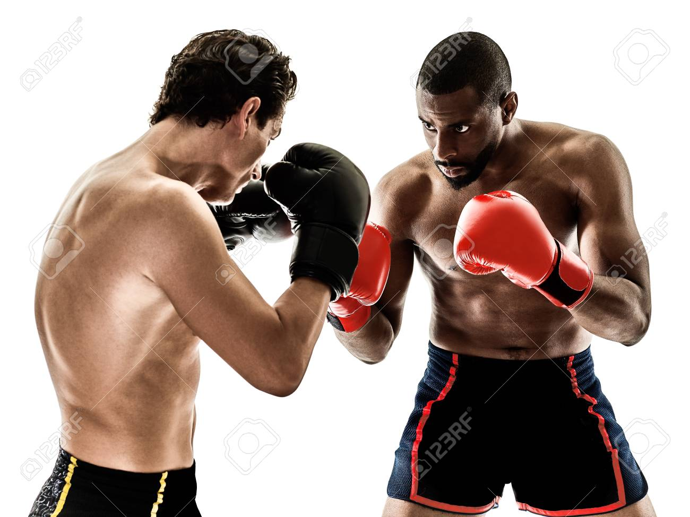

boks // ukratko
Boks je profesionalni sport koji se temelji na borbi između dva takmičara, koji koriste svoje ruke da bi zadali udarce protivniku dok pokušavaju da izbegnu udarce.
Takmičenja se održavaju u ringu, a borci nose rukavice koje omogućavaju sigurnost, ali i čine udarce snažnijima.
Mečevi se sastoje od određenog broja rundi, obično između 4 i 12, a pobednik se određuje na osnovu broja poena, tehničkog nokauta (TKO) ili nokauta (KO).
Boks kao profesionalni sport ima široku globalnu popularnost, sa velikim brojem organizacija i promocija, kao što su WBC, WBA, IBF i WBO, koje dodeljuju titule šampiona u različitim težinskim kategorijama.
Profesionalni bokseri obično prolaze kroz dug i težak trening kako bi postali vrhunski sportisti, a karijere im uključuju borbe sa najboljim rivalima, s ciljem da osvoje titule i stvore ime u ovom sportu.
Boks je sport koji zahteva izuzetnu fizičku spremnost, strategiju, mentalnu čvrstinu i izdržljivost.
